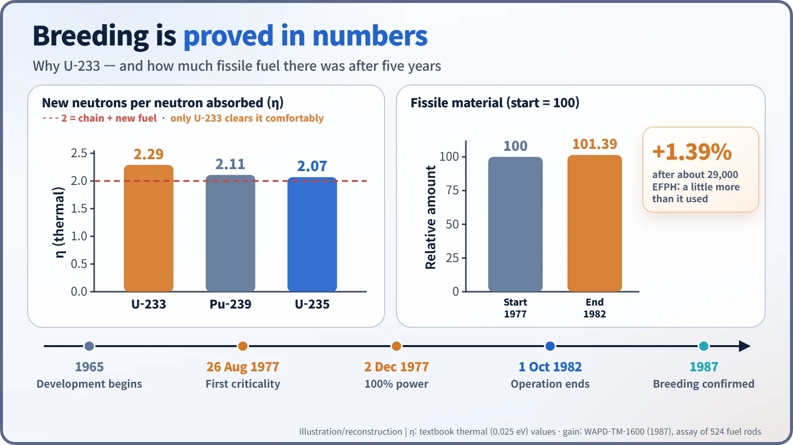
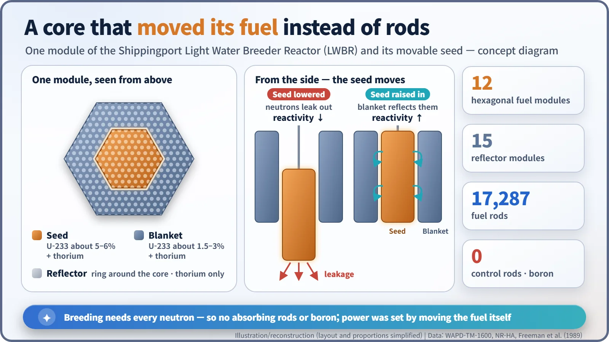
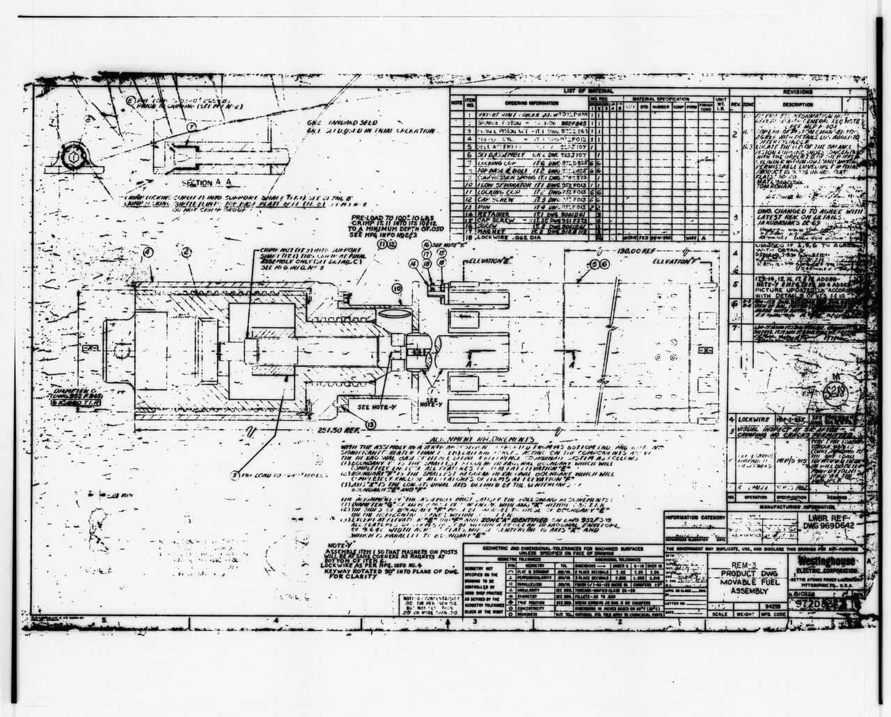
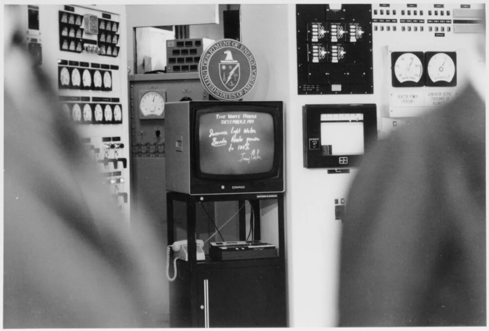

Nuclear History · 216
The Core That Left 1.39% More Than It Used — Shippingport's Light Water Breeder Reactor (1977–1982)
Started at full power by a presidential order in chalk, the breeder core proved an ordinary water-cooled reactor can make more fuel than it burns, but no successor was ever built.
From 1977 to 1982 the last core of the Shippingport Atomic Power Station near Pittsburgh was a Light Water Breeder Reactor: a thorium and uranium-233 core with no control rods, run by moving its fuel. When it was examined after shutdown it held 1.39% more fissile material than at the start, proving that an ordinary water-cooled reactor can breed. No successor was ever built.
A number at the end of 22 years
In October 1987 a final summary report landed at the U.S. Department of Energy. Twenty-two years of work had come down to a single number: 1.39 per cent. After five years of making electricity, the spent core had been taken apart and 524 of its fuel rods checked by non-destructive assay. The core now held 1.39% more fissile material than it had when it was loaded. This is the story of a reactor that made slightly more fuel than it burned: the Light Water Breeder Reactor (LWBR) at Shippingport, Pennsylvania. [2]
Breeding was supposed to be a fast-neutron game
In the 1960s many planners worried that uranium would soon become scarce. The answer seemed to be the breeder, a reactor that turns non-fuel material into new fuel faster than it consumes the old. In the United States the main effort went into the liquid-metal fast breeder, which uses unmoderated "fast" neutrons and liquid sodium as coolant.
Hyman G. Rickover (1900–1986), head of the Naval Reactors programme, chose a different road in 1965. Why not breed with slow (thermal) neutrons, using a thorium core inside the familiar light-water reactor equipment the nuclear industry already knew? The test bed would be Shippingport, America's first full-scale nuclear plant built solely for peaceful power, which had started up in December 1957. [2] [4]
How thorium becomes fuel
Thorium-232 cannot sustain a chain reaction on its own. But when it captures a neutron it becomes thorium-233, which decays twice by beta emission (half-lives of about 22 minutes and about 27 days) into uranium-233, an excellent fissile fuel. Think of it as damp logs slowly drying into kindling while the fire burns.
For breeding, the neutron arithmetic has to work. Physicists call the average number of new neutrons released for each neutron a fuel nucleus absorbs η (eta). One neutron must keep the chain reaction going and another must convert a thorium atom into new fuel, so η has to sit comfortably above 2. For slow neutrons, uranium-235 gives about 2.07 and plutonium-239 about 2.11, too tight once inevitable losses are counted. Uranium-233 gives about 2.29. That is why the uranium-233 and thorium pairing was, in practice, the only candidate for breeding in a water-cooled reactor.

A reactor with no control rods
With so thin a margin, every neutron counted. The designers removed the usual neutron-swallowing control rods and did without the boric acid normally dissolved in the cooling water. Instead, they moved the fuel. The core had 12 hexagonal fuel modules. At the centre of each sat a movable "seed" richer in uranium-233 (about 5–6%), surrounded by a fixed "blanket" with less (about 1.5–3%). Lowering the seed let more neutrons leak away and turned the power down; raising it into the blanket reflected neutrons back and brought the reaction up. Around the edge of the core, 15 reflector modules of thorium alone caught escaping neutrons and turned them into more uranium-233. The fuel rods were also packed closer together to squeeze out some of the water, which absorbs neutrons too. [1] [4] [5]
In all there were 17,287 fuel rods. According to Rickover, the core held about 1,100 pounds (roughly 500 kg) of uranium-233 and some 40 tons of natural thorium. It was installed while the plant was shut down after a turbine-generator failure in February 1974. [3] [4]


A presidential order in chalk
In the small hours of 26 August 1977, operators began lifting the central seed modules up into the blanket. At 4:38 a.m. the light water breeder reached criticality for the first time. [4] [5]
Three months later, on the morning of 2 December 1977, President Jimmy Carter (1924–2024), in the Oval Office, stepped up to a blackboard linked by closed-circuit television to the plant's control room. He chalked an instruction to increase the breeder reactor to 100% and signed it. The reactor, running at about 90%, was soon reported at full rated power. Carter noted the date's double significance: 35 years since the first sustained chain reaction in Chicago (2 December 1942), and 20 years since Shippingport itself first went critical. When he asked whether a successful breeder might stretch energy supplies "maybe to 600 years", Rickover replied, "very much more if it works." The exchange is best read as political rhetoric, not a technical estimate. [3]

Five years, 60% past its design life
The core had been designed for 18,000 effective full-power hours (EFPH). By gradually lowering the power, operators kept it going 60% longer, to more than 29,000 EFPH. Its overall capacity factor was 65%, and it generated about 2.1 billion kWh of electricity (gross) for the Pittsburgh area. On 1 October 1982 the reactor shut down for the last time, closing Shippingport's 25-year operating life. Not a single defective fuel rod was found in the spent core, and the careful analysis that followed produced the 1.39% at the top of this story. (The main journal paper rounds it to "about 1.3%".) [1] [2]
| Item | LWBR at Shippingport |
|---|---|
| Fuel | Thorium oxide with uranium-233 oxide |
| Reactivity control | Movable seed; no control rods or soluble boron |
| Design life / achieved | 18,000 EFPH / more than 29,000 EFPH |
| Capacity factor | 65% |
| Gross electricity | About 2.1 billion kWh |
| Fissile gain at end of life | 1.39% (journal paper: about 1.3%) |
A technical success with no sequel
The final report concluded that the light water breeder was "a viable alternative" to replace pressurized water reactors in the next generation, with minimal changes to design, fabrication and operation. The programme even drew up designs for 900–1,000 MWe breeder and "prebreeder" plants. None was ever built. [2]
The reasons are less dramatic than the president's blackboard. The gain was real but small, about 1.4% over five years, and the step of recovering uranium-233 from a spent core and making it into fresh fuel was never demonstrated. One later commentary notes that each module required some 2,000 precision measurements and much hand work, and that with no other thorium-fuelled reactors there was no one to share the cost of a fuel supply chain. Interest in thorium has not disappeared, though; India, among others, still pursues it. [5]
Shippingport's last core proved that a water-cooled reactor can breed. It did not prove that doing so pays. The figure 1.39% measures, honestly, the distance between those two claims.